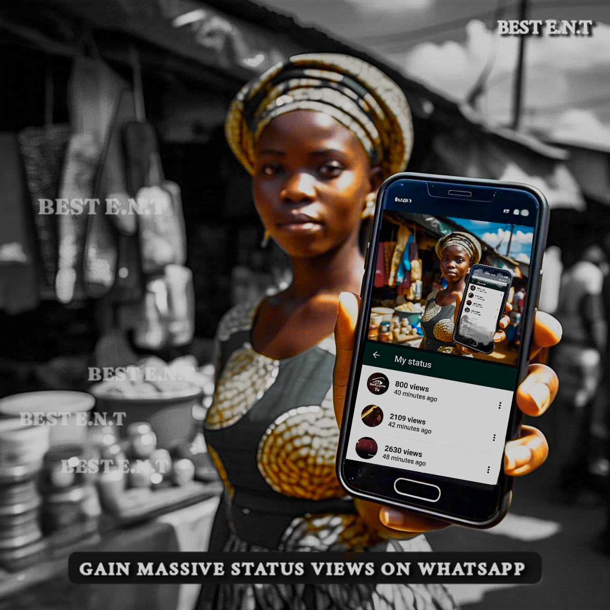
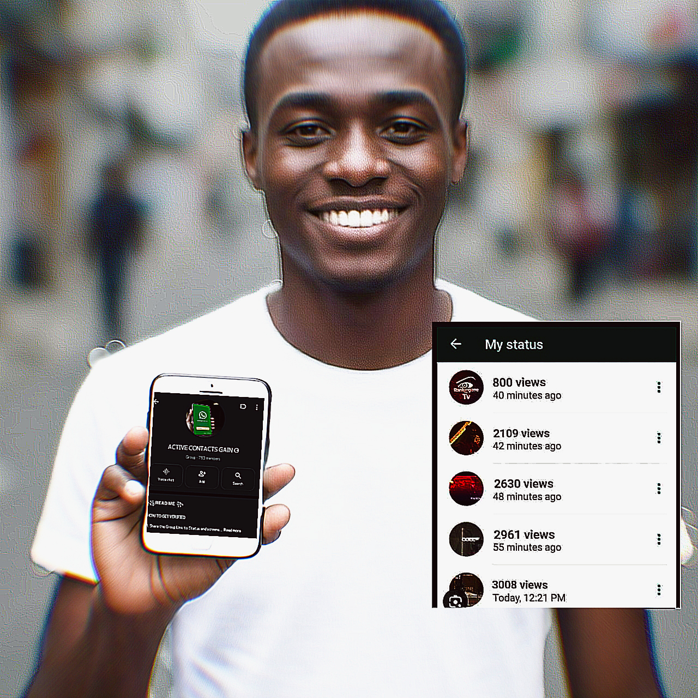

The smartest, easiest way to grow Active WhatsApp contacts

Active Contact Gain is a simple and secure system that helps Nigerians grow their WhatsApp contacts.
Instead of spamming group links, a simple task-based system was created to build value and real engagement.
This was built for Nigerians to gain real connections, not just empty numbers.
Here’s how simple Contact Gain is:
1. You complete one easy task — like following an account, saving a number, or engaging with something real. 2. Once done, you get verified and gain access to a premium WhatsApp group. 3. That group is full of people like you — ready to connect, grow, and support. No bots. No random drops. Just real people who actually did something to earn their spot. That’s what makes it different. And powerful.
It takes less than 5 minutes to complete your task and start gaining. If your goal is to gain active contacts, not empty numbers, this is the place to begin.
